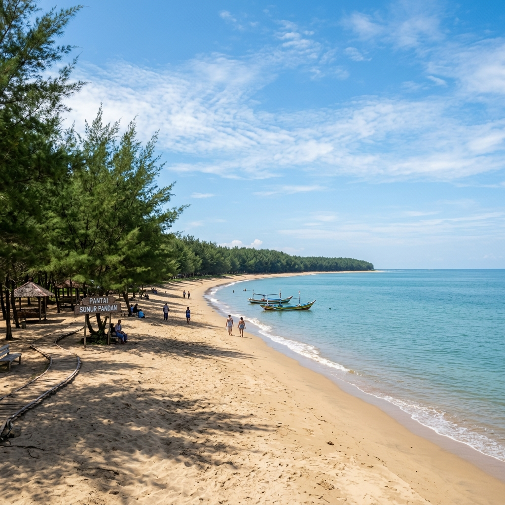
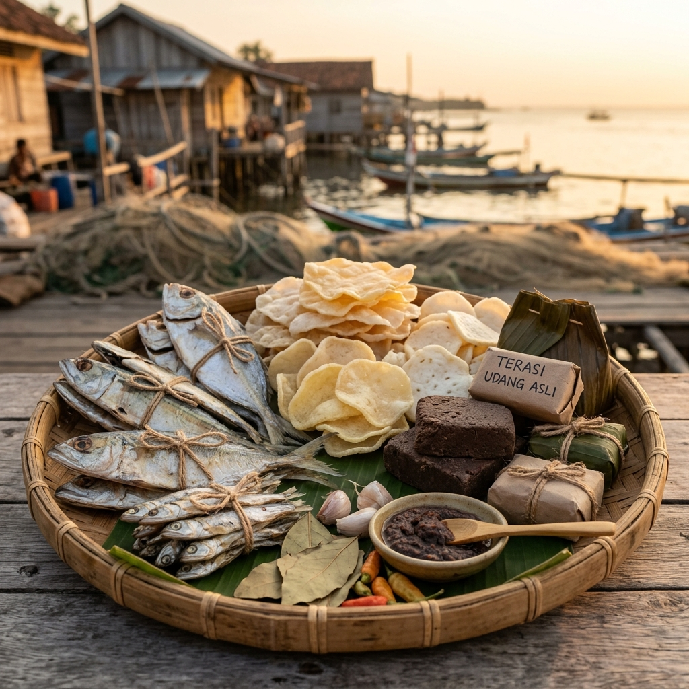

Destinasi wisata favorit Pantai Joko Tingkir & Pantai Sumur Pandan
Wisata pesisir favorit di Nyamplungsari dengan pemandangan laut yang indah, fasilitas gazebo santai, serta spot bersantai bersama keluarga.

Pantai yang asri dan tenang dengan pepohonan pesisir rindang, tempat terbaik untuk melihat matahari terbit dan menikmati angin laut segar.

Produk olahan khas buatan warga lokal Desa Nyamplungsari berbasis hasil laut dan pertanian berkualitas tinggi: